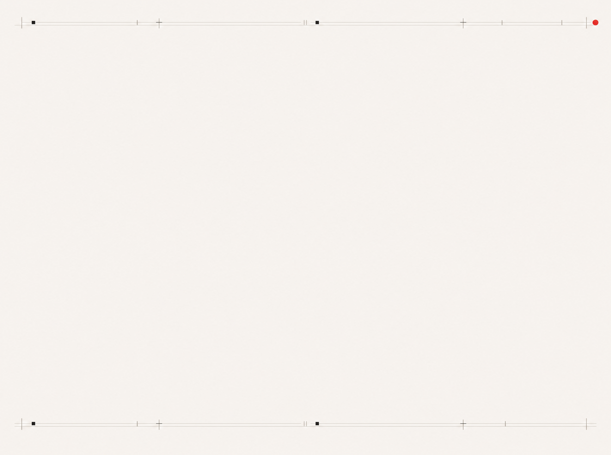

PP.MEDIA · И_И_ · выпуск 06
Туннелирование
сигнала
.
01
ВХОДЯЩИЙ
СИГНАЛ
отчёт · статья · встреча
02
CODEX
сканирует Vault
по правилам разнесения
МЕСТА
ПРИЗЕМЛЕНИЯ
03
Стратегия 26–29
Витрина услуг
Контент-план недели
Реестр методических артефактов
04
05
СВОДКА
ПО ВСЕМ ДОМАМ
гипотеза · аргумент · тема
машина ищет
человек подтверждает
!
Главное
правило
Машина ничего не разносит без явного «да» от человека. Я отвечаю за смысл, машина за скорость работы.
Это и есть human in the loop.